Logic and Proof
17 The Natural Numbers and Induction
This chapter marks a transition from the abstract to the concrete. Viewing the mathematical universe in terms of sets, relations, and functions gives us useful ways of thinking about mathematical objects and structures and the relationships between them. At some point, however, we need to start thinking about particular mathematical objects and structures, and the natural numbers are a good place to start. The nineteenth century mathematician Leopold Kronecker once proclaimed "God created the whole numbers; everything else is the work of man." By this he meant that the natural numbers (and the integers, which we will also discuss below) are a fundamental component of the mathematical universe, and that many other objects and structures of interest can be constructed from these.
In this chapter, we will consider the natural numbers and the basic principles that govern them. In Chapter 18 we will see that even basic operations like addition and multiplication can be defined using means described here, and their properties derived from these basic principles. Our presentation in this chapter will remain informal, however. In Chapter 19, we will see how these principles play out in number theory, one of the oldest and most venerable branches of mathematics.
17.1 The Principal of Induction
The set of natural numbers is the set
In the past, opinions have differed as to whether the set of natural
numbers should start with 0 or 1, but these days most mathematicians
take them to start with 0. Logicians often call the function the successor function, since it maps each natural number,
 , to the one that follows it. What makes the natural numbers
special is that they are generated by the number zero and the
successor function, which is to say, the only way to "construct" a
natural number is to start with
, to the one that follows it. What makes the natural numbers
special is that they are generated by the number zero and the
successor function, which is to say, the only way to "construct" a
natural number is to start with  and apply the successor function
finitely many times. From a foundational standpoint, we are in danger
of running into a circularity here, because it is not clear how we can
explain what it means to apply a function "finitely many times"
without talking about the natural numbers themselves. But the
following principle, known as the principle of induction, describes
this essential property of the natural numbers in a non-circular way.
and apply the successor function
finitely many times. From a foundational standpoint, we are in danger
of running into a circularity here, because it is not clear how we can
explain what it means to apply a function "finitely many times"
without talking about the natural numbers themselves. But the
following principle, known as the principle of induction, describes
this essential property of the natural numbers in a non-circular way.
Principle of Induction. Let  be any property of natural
numbers. Suppose holds of zero, and whenever holds of a
natural number , then it holds of its successor,
be any property of natural
numbers. Suppose holds of zero, and whenever holds of a
natural number , then it holds of its successor,  . Then
holds of every natural number.
. Then
holds of every natural number.
This reflects the image of the natural numbers as being generated by zero and the successor operation: by covering the zero and successor cases, we take care of all the natural numbers.
The principle of induction provides a recipe for proving that every
natural number has a certain property: to show that holds of every
natural number, show that it holds of , and show that whenever it
holds of some number , it holds of . This form of proof is
called a proof by induction. The first required task is called the
base case, and the second required task is called the induction
step. The induction step requires temporarily fixing a natural number
, assuming that holds of , and then showing that holds
of . In this context, the assumption that holds of is
called the inductive hypothesis.
You can visualize proof by induction as a method of knocking down an infinite stream of dominoes, all at once. We set the mechanism in place and knock down domino 0 (the base case), and every domino knocks down the next domino (the induction step). So domino 0 knocks down domino 1; that knocks down domino 2, and so on.
Here is an example of a proof by induction.
Theorem. For every natural number ,
Proof. We prove this by induction on . In the base case, when  , we have , as required.
, we have , as required.
For the induction step, fix , and assume (the induction hypothesis). We need to show that this
same claim holds with replaced by . But this is just a
calculation:
In the notation of first-order logic, if we write  to mean that
holds of , we could express the principle of induction as
follows:
But notice that the principle of induction says that the axiom holds
for every property , which means that we should properly use a
universal quantifier for that, too:
Quantifying over properties takes us out of the realm of first-order
logic; induction is therefore a second-order principle.
to mean that
holds of , we could express the principle of induction as
follows:
But notice that the principle of induction says that the axiom holds
for every property , which means that we should properly use a
universal quantifier for that, too:
Quantifying over properties takes us out of the realm of first-order
logic; induction is therefore a second-order principle.
The pattern for a proof by induction is expressed even more naturally by the following natural deduction rule:

You should think about how some of the proofs in this chapter could be represented formally using natural deduction.
For another example of a proof by induction, let us derive a formula
that, given any finite set  , determines the number of subsets of
. For example, there are four subsets of the two-element set
, determines the number of subsets of
. For example, there are four subsets of the two-element set  , namely , 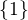,
, namely , 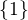,  , and
, and  . You should
convince yourself that there are eight subsets of the set . The following theorem establishes the general pattern.
. You should
convince yourself that there are eight subsets of the set . The following theorem establishes the general pattern.
Theorem. For any finite set , if has elements, then there
are  subsets of .
subsets of .
Proof. We use induction on . In the base case, there is only one
set with elements, the empty set, and there is exactly one subset
of the empty set, as required.
In the inductive case, suppose has elements. Let  be
any element of , and let be the set containing the remaining
elements. In order to count the subsets of , we divide them
into two groups.
be
any element of , and let be the set containing the remaining
elements. In order to count the subsets of , we divide them
into two groups.
First, we consider the subsets of that don't contain
. These are exactly the subsets of , and by the inductive
hypothesis, there are of those.
Next we consider the subsets of that do contain . Each of
these is obtained by choosing a subset of and adding . Since
there are subsets of , there are subsets of that
contain .
Taken together, then, there are subsets of ,
as required.
We have seen that there is a correspondence between properties of a
domain and subsets of a domain. For every property of natural
numbers, we can consider the set of natural numbers with that
property, and for every set of natural numbers, we can consider the
property of being in that set. For example, we can talk about the
property of being even, or talk about the set of even numbers. Under
this correspondence, the principle of induction can be cast as
follows:
Principle of Induction. Let be any set of natural numbers that
contains and is closed under the successor operation. Then .
Here, saying that is "closed under the successor operation" means
that whenever a number is in , so is .
17.2 Variants of Induction
In this section, we will consider variations on the principle of induction that are often useful. It is important to recognize that each of these can be justified using the principle of induction as stated in the last section, so they need not be taken as fundamental.
The first one is no great shakes: instead of starting from , we can
start from any natural number, 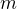.
Principle of Induction from a Starting Point. Let be any
property of natural numbers, and let be any natural
number. Suppose holds of , and whenever holds of a natural
number greater than or equal to , then it holds of its
successor, . Then holds of every natural number greater
than or equal to .
Assuming the hypotheses of this last principle, if we let be
the property " holds of  ," we can prove that holds of
every by the ordinary principle of induction. But this means that
holds of every number greater than or equal to .
," we can prove that holds of
every by the ordinary principle of induction. But this means that
holds of every number greater than or equal to .
Here is one example of a proof using this variant of induction.
Theorem. For every natural number  , .
, .
Proof. By induction on . When , we have , as required.
For the induction step, suppose and . Since
is greater than or equal to  , we have ,
and so
, we have ,
and so
For another example, let us derive a formula for the sum total of the angles in a convex polygon. A polygon is said to be convex if every line between two vertices stays inside the polygon. We will accept without proof the visually obvious fact that one can subdivide any convex polygon with more than three sides into a triangle and a convex polygon with one fewer side, namely, by closing off any two consecutive sides to form a triangle. We will also accept, without proof, the basic geometric fact that the sum of the angles of any triangle is 180 degrees.
Theorem. For any , the sum of the angles of any convex
 -gon is .
-gon is .
Proof. In the base case, when , this reduces to the statement that the sum of the angles in any triangle is 180 degrees.
For the induction step, suppose , and let be a convex
-gon. Divide into a triangle and an -gon. By the
inductive hypotheses, the sum of the angles of the -gon is
 degrees, and the sum of the angles of the triangle is
degrees, and the sum of the angles of the triangle is  degrees. The measures of these angles taken together make up the sum
of the measures of the angles of , for a total of degrees.
degrees. The measures of these angles taken together make up the sum
of the measures of the angles of , for a total of degrees.
For our second example, we will consider the principle of complete induction, also sometimes known as total induction.
Principle of Complete Induction. Let be any property that
satisfies the following: for any natural number , whenever
holds of every number less than , it also holds of . Then
holds of every natural number.
Notice that there is no need to break out a special case for zero: for
any property , holds of all the natural numbers less than zero,
for the trivial reason that there aren't any! So, in particular, any
such property automatically holds of zero.
Notice also that if such a property holds of every number less than
, then it also holds of every number less than (why?). So,
for such a , the ordinary principle of induction implies that for
every natural number , holds of every natural number less than
. But this is just a roundabout way of saying that holds of
every natural number. In other words, we have justified the principle
of complete induction using ordinary induction.
To use the principle of complete induction we merely have to
let be any natural number and show that holds of , assuming
that it holds of every smaller number. Compare this to the ordinary
principle of induction, which requires us to show assuming
only . The following example of the use of this principle is
taken verbatim from the introduction to this book:
Theorem. Every natural number greater than or equal to 2 can be written as a product of primes.
Proof. We proceed by induction on . Let be any natural number
greater than 2. If is prime, we are done; we can consider
itself as a product with one factor. Otherwise, is composite, and we
can write where and  are smaller than and
greater than 1. By the inductive hypothesis, each of and can
be written as a product of primes, say
are smaller than and
greater than 1. By the inductive hypothesis, each of and can
be written as a product of primes, say
 and
But then we have
and
But then we have
 a product of primes, as required.
a product of primes, as required.
Finally, we will consider another formulation of induction, known as the least element principle.
The Least Element Principle. Suppose is some property of natural
numbers, and suppose holds of some . Then there is a smallest
value of for which holds.
In fact, using classical reasoning, this is equivalent to the
principle of complete induction. To see this, consider the
contrapositive of the statement above: "if there is no smallest value
for which holds, then doesn't hold of any natural number." Let
be the property does not hold of . Saying that there
is no smallest value for which holds means that, for every , if
holds at , then it holds of some number smaller than ; and
this is equivalent to saying that, for every , if  doesn't hold
at , then there is a smaller value for which doesn't hold. And
that is equivalent to saying that if holds for every number less
than , it holds for as well. Similarly, saying that doesn't
hold of any natural number is equivalent to saying that holds of
every natural number. In other words, replacing the least element
principle by its contrapositive, and replacing by "not ," we
have the principle of complete induction. Since every statement is
equivalent to its contrapositive, and every predicate as its negated
version, the two principles are the same.
doesn't hold
at , then there is a smaller value for which doesn't hold. And
that is equivalent to saying that if holds for every number less
than , it holds for as well. Similarly, saying that doesn't
hold of any natural number is equivalent to saying that holds of
every natural number. In other words, replacing the least element
principle by its contrapositive, and replacing by "not ," we
have the principle of complete induction. Since every statement is
equivalent to its contrapositive, and every predicate as its negated
version, the two principles are the same.
It is not surprising, then, that the least element principle can be used in much the same way as the principle of complete induction. Here, for example, is a formulation of the previous proof in these terms. Notice that it is phrased as a proof by contradiction.
Theorem. Every natural number greater than equal to 2 can be written as a product of primes.
Proof. Suppose, to the contrary, there some natural number greater
than or equal to 2 cannot be written as a product of primes. By the
least element principle, there is a smallest such element; call it
. Then is not prime, and since it is greater than or equal to
2, it must be composite. Hence we can write where
and are smaller than and greater than 1. By
the assumption on , each of and can be written as a product of
primes, say
and
But then we have
a product of primes, contradicting the fact that cannot be written
as a product of primes.
Here is another example:
Theorem. Every natural number is interesting.
Proof. Suppose, to the contrary, some natural number is
uninteresting. Then there is a smallest one, . In other words,
is the smallest uninteresting number. But that is really interesting!
Contradiction.
17.3 Recursive Definitions
Suppose I tell you that I have a function in mind, satisfying the following properties:

What can you infer about  ? Try calculating a few values:
? Try calculating a few values:
It soon becomes apparent that for every ,  .
.
What is more interesting is that the two conditions above specify
all the values of , which is to say, there is exactly one
function meeting the specification above. In fact, it does not matter
that takes values in the natural numbers; it could take values in
any other domain. All that is needed is a value of  and a way
to compute the value of in terms of and . This is
what the principle of definition by recursion asserts:
and a way
to compute the value of in terms of and . This is
what the principle of definition by recursion asserts:
Principle of Definition by Recursion. Let  be any set, and
suppose is in , and . Then there is a
unique function satisfying the following two clauses:
be any set, and
suppose is in , and . Then there is a
unique function satisfying the following two clauses:
The principle of recursive definition makes two claims at once: first,
that there is a function satisfying the clauses above, and,
second, that any two functions and satisfying those
clauses are equal, which is to say, they have the same values for
every input. In the example with which we began this section, is
just  and .
and .
In some axiomatic frameworks, the principle of recursive definition can be justified using the principle of induction. In others, the principle of induction can be viewed as a special case of the principle of recursive definition. For now, we will simply take both to be fundamental properties of the natural numbers.
As another example of a recursive definition, consider the function 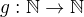 defined recursively by the following clauses:
Try calculating the first few values. Unwrapping the definition, we
see that for every
; indeed, definition by recursion is usually the proper way to make
expressions using "" precise. The value is read "
factorial," and written  .
.
Indeed, summation notation and product notation can also be made precise using recursive definitions. For example, the function can be defined recursively as follows:
Induction and recursion are complementary principles, and typically
the way to prove something about a recursively defined function is to
use the principle of induction. For example, the following theorem
provides a formulas for the sum 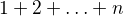, in terms of .
Theorem. For every , .
Proof. In the base case, when  , both sides are equal to .
, both sides are equal to .
In the inductive step, we have

There are just as many variations on the principle of recursive
definition as there are on the principle of induction. For example, in
analogy to the principle of complete induction, we can specify a value
of in terms of the values that takes at all inputs smaller
than . When  , for example, the following definition
specifies that value of a function in terms of its two
predecessors:
, for example, the following definition
specifies that value of a function in terms of its two
predecessors:
Calculating the values of on we obtain
Here, after the second number, each successive number is the sum of the two values preceding it. This is known as the Fibonacci sequence, and the corresponding numbers are known as the Fibonacci numbers. An ordinary mathematical presentation would write instead of and specify the sequence with the following equations:

But you can now recognize such a specification as an implicit appeal to the principle of definition by recursion. We ask you to prove some facts about the Fibonacci sequence in the exercises below.
17.4 Arithmetic on the Natural Numbers
In the next chapter, we will see that it is even possible to define addition and multiplication recursively, and to establish most of their basic properties using the principle of recursion. This is important from a foundational perspective, in which, as much as possible, we want to ground our reasoning on a small number of fundamental principles. Just as the foundations of a building are below ground, however, the foundations of mathematics should only be visible when we choose to go down to the basement and look around. In this section, we summarize the basic properties of natural numbers that play a role in day-to-day mathematics. In an ordinary mathematical argument or calculation, they can be used without explicit justification.
We also have the following properties:
- ;
- if then
 ;
; - if and then .
We can define , " is less than or equal to ," to mean
that there exists a such that 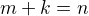. If we do that, it is
not hard to show that the less-than-or-equal-to relation satisfies all
the following properties, for every , , and :
- (reflexivity);
- if and then (transitivity);
- if and then (antisymmetry);
- for all and , either or is true (totality);
- if then ;
- if then 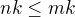;
- if then
 or
or  ;
; - .
Remember from Chapter 13 that the first four items assert that  is a linear order. Note that when we write , we mean
is a linear order. Note that when we write , we mean  .
.
We can then define , " is less than ," to mean . The following proposition then justifies the terminology.
Proposition. With the definitions above, for every and ,  if and only if or .
if and only if or .
Proof. First, suppose , and let us show or  . Since , then . If
. Since , then . If  , we have . Otherwise, , and we have , which
mean .
, we have . Otherwise, , and we have , which
mean .
Conversely, suppose or . If , then we have , so . And if , we also have  , as required.
, as required.
In a similar way, we can show that if and only if
and 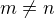. In fact, we can demonstrate all of the following from
these properties and the properties of :
- is never true (irreflexivity);
- if and then (transitivity);
- for all and , either , or
is true (trichotomy);
- if then ;
- if and then ;
- if
 then
then  or ;
or ; - for all , or
 .
.
The first three items mean that 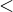 is a strict linear order, and the
properties above means that is the associated linear order, in
the sense described in Section 13.1.
Proof. We will prove some of these properties.
The first property is straightforward: we know , and if we had , we should have , a contradiction.
For the second property, assume and . Then , which implies .
For the third, we know that either or . If ,
we are done, and otherwise we have either or .
For the fourth, if  , we have , as required.
, we have , as required.
For the fifth, suppose , which is to say, . If  , then , and so 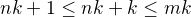. But this
implies
, then , and so 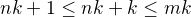. But this
implies  , as required.
, as required.
The rest of the remaining proofs are left as an exercise to the reader.
Here are some additional properties of and :
- and cannot both hold (asymmetry);
- ;
- if and then ;
- if and then ;
- if then ;
- if then ;
- if then ;
- if then and .
These can be proved from the ones above. Moreover, the collection of principles we have just seen can be used to justify basic facts about the natural numbers, which are again typically taken for granted in informal mathematical arguments.
Proposition. If and are natural numbers such that  , then .
, then .
Proof. We first prove that . We know that or . Suppose that  . Then . Since ,
we conclude that , which contradicts the fact that . Since leads to a contradiction, we must have .
. Then . Since ,
we conclude that , which contradicts the fact that . Since leads to a contradiction, we must have .
Now we can easily conclude that , since . Hence .
Proposition. If is a natural number such that , then , or  .
.
Proof. In this proof we repeatedly use the property that if
then or . Since , we conclude
that either or . In the first case we
conclude , and we are done. In the second case we conclude , which implies that either 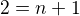, or . In the
first case, we conclude , and we are done. In the second case,
we conclude , and appeal one last time to the general principle
presented above to conclude that either or . In
the first case, we conclude , and we are once again done. In
the second case, we conclude that . This leads to a
contradiction, since now 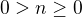, hence , which
contradicts the irreflexivity of .
17.5 The Integers
The natural numbers are designed for counting discrete quantities, but
they suffer an annoying drawback: it is possible to subtract from
if is less than or equal to , but not if is greater
than . The set of integers, , extends the natural numbers
with negative values, to make it possible to carry out subtraction in
full:
We will see in a later chapter that the integers can be extended to the rational numbers, the real numbers, and the complex numbers, each of which serves useful purposes. For dealing with discrete quantities, however, the integers will get us pretty far.
You can think of the integers as consisting of two copies of the
natural numbers, a positive one and a negative one, sharing a common
zero. Conversely, once we have the integers, you can think of the
natural numbers as consisting of the nonnegative integers, that is,
the integers that are greater than or equal to . Most
mathematicians blur the distinction between the two, though we will
see that in Lean, for example, the natural numbers and the integers
represent two different data types.
Most of the properties of the natural numbers that were enumerated in
the last section hold of the integers as well, but not all. For
example, it is no longer the case that for every ,
since the claim is false for . For another example, it is not
the case that every integer is either equal to or greater than
, since this fails to hold of the negative integers.
The key property that the integers enjoy, which sets them apart from
the natural numbers, is that for every integer there is a value
with the property that . The value is called
the negation of . We define subtraction  to be . For any integer , we also define the absolute value of
, written , to be if
to be . For any integer , we also define the absolute value of
, written , to be if  , and otherwise.
, and otherwise.
Proof by induction no longer holds, because induction does not cover the negative numbers. But we can use induction to show that a property holds of every nonnegative integer, for example. Moreover, we know that every negative integer is the negation of a positive one.As a result, proofs involving the integers often break down into two cases, where one case covers the nonnegative integers, and the other case covers the negative ones.
17.6 Exercises
- Write the principle of complete induction using the notation of symbolic logic. Also write the least element principle this way, and use logical manipulations to show that the two are equivalent.
- Show that for every , .
- Show that for every , .
- Given the definition of the Fibonacci numbers in Section 17.3,
prove Cassini's identity: for every , . Hint: in the induction step, write as
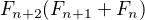.
- Prove 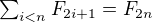.
Prove the following two identities:
- 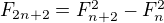
Hint: use induction on
, and prove them both at once. In the
induction step, expand , and
similarly for . Proving the second equation is
especially tricky. Use the inductive hypothesis and the first
identity to simplify the left-hand side, and repeatedly unfold the
Fibonacci number with the highest index and simplify the equation
you need to prove. (When you have worked out a solution, write a
clear equational proof, calculating in the ``forwards''
direction.)
- Prove that every natural number can be written as a sum of distinct powers of 2. For this problem, is counted as power of 2.
Let 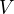 be a non-empty set of integers such that the following two properties hold:
- if , then
- if , then every multiple of
 is an element of
is an element of
Prove that there is some , such that is equal to the set of multiples of
 . Hint: use the least element principle.
. Hint: use the least element principle.
- Following the example in Section 17.4 prove that if is a
natural number and , then is one of the values
 , or
, or  .
. Prove that if
and are natural numbers and 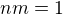, then
.
This is tricky. First show that
and are greater than ,
and hence greater than or equal to  . Then show that if either
one of them is greater than , then .
. Then show that if either
one of them is greater than , then .
- Prove all the claims in Section 17.4 that were stated without proof.
- Prove the following properties of negation and subtraction on the
integers, using only the properties of negation and subtraction
given in Section 17.5.
- if then ;
- ;
- if then ;
- ;
- ;
- if then 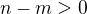;
- if then ;
- 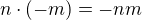;
- ;
- if then
 .
.
- Suppose you have an infinite chessboard with a natural number written in each square. The value in each square is the average of the values of the four neighboring squares. Prove that all the values on the chessboard are equal.
- Prove that every natural number can be written as a sum of distinct non-consecutive Fibonacci numbers. For example, is not allowed, since 3 and 5 are consecutive Fibonacci numbers, but is allowed.